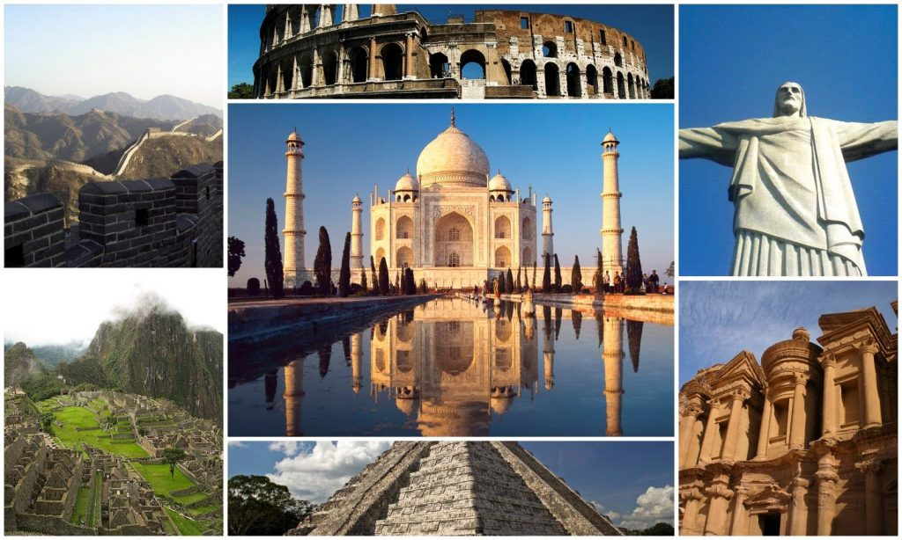

En 2007, Bernard Weber, fundador de New Open World Corporation, decidió actualizar la lista de las siete maravillas del mundo abriendo un proceso de votación a través de internet y redes sociales. Más de cien millones de personas participaron en la designación de las 7 maravillas del mundo moderno moderno. La fase final fue especialmente reñida entre más de una veintena de obras arquitectònicas repartidas por los cinco continentes.
Las listas de imprescindibles se han elaborado a lo largo de la historia en torno a distintas disciplinas artísticas. Incluso hay indicios de que ya los griegos las realizaban. Así que en contra de lo que pueda parecer, no son invención ni de internet ni de las redes sociales.
La más famosa fue la de las siete maravillas del mundo, lugares que merecían ser visitados al menos una vez en la vida. El pintor neerlandès Maerten van Heemskrerck fijó la lista en el S.XVI con la realización de siete cuadros en los que inmortalizó: la Gran Pirámide de Guiza (la más antigua de las siete maravillas y la única que todavía perdura), los Jardines Colgantes de Babilonia, el Templo de Artemisa en Éfeso, la Estatua de Zeus en Olimpia, el Mausoleo de Halicarnaso, el Coloso de Rodas y el Faro de Alejandría.
Existen, sin embargo, sospechas de que no todas aquellas maravillas del mundo fueran reales y no quedaran en algo más que exageraciones literarias. Las maravillas del mundo moderno no dejan lugar a duda. Son reales como la vida misma y pueden visitarse hoy en día.